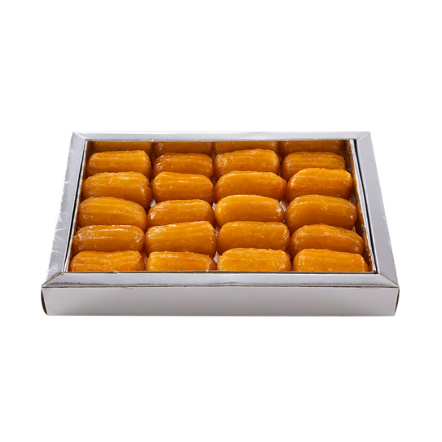

Balah el Sham (Egyptian Choux Pastry)

Balah el Sham, Egyptian choux pastry,
is a delectable treat featuring airy dough filled with sweet cream,
offering a delightful dessert experience.
Ingredients
- 3 cups water, divided
- 2 cups white sugar, divided
- 1 lime, juiced
- 2 teaspoons vanilla extract, divided
- 2 ½ cups vegetable oil
- ½ teaspoon salt
- 1 cup all-purpose flour
- 4 eggs
- 2 cups corn oil
Recipe instructions
- Combine 1 cup water and 1 cup sugar in a saucepan over high heat.
- Bring to a boil; stir until sugar dissolves. Reduce heat to medium; add lime juice.
- Simmer until flavors combine, about 10 minutes.
- Remove from heat. Stir 1 teaspoon vanilla extract into the syrup; let cool.
- Stir 2 cups water, 1 cup sugar, vegetable oil, and salt together in a pot over medium-high heat; bring to a boil.
- Reduce heat to medium. Add flour; stir vigorously with a wooden spoon until batter forms into a ball.
- Cook until batter is shiny, about 1 minute. Transfer to a bowl; allow to cool, about 5 minutes.
- Flatten batter into the bottom of the bowl. Add eggs, 1 at a time, mixing well after each addition.
- Stir in remaining 1 teaspoon vanilla extract; mix until batter is creamy. Pour into a cloth piping bag fitted with a large star tip.
- Heat corn oil in a deep saucepan over medium heat until bubbly; reduce heat to medium-low.
- Squeeze 2 inches of batter onto an oiled spatula and lower into the hot oil; repeat until saucepan is full.
- Cook, turning occasionally, until golden brown, about 5 minutes. Transfer pastries to a paper bag to drain, about 30 seconds.
- Soak hot pastries in syrup; transfer to a plate to cool, about 5 minutes.